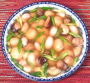

|
Rooster Nut SoupChina / California - | ||||
| Makes: Effort: Sched: DoAhead: |
6 soup ** 1-1/4 hrs Most |
A popular delicacy in China, and supposed to enhance manly prowess, and skin tone for the ladies. This recipe uses a Chinese conceit where several ingredients more or less resemble each other. See also Comments. | |||
|
12 a/r 3 1/8 3 1 1 4 1/2 1 1/2 |
oz in can can c T T t |
Rooster Nuts (1) Rice Wine Black Mushroom Ginger root Scallions Straw Mushrooms (2) Button Mushrooms Chicken stock (3) Soy Sauce Rice Wine (4) Salt |
Prep - (35 min - 10 min work)
|